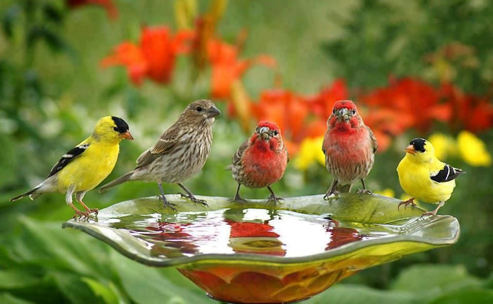
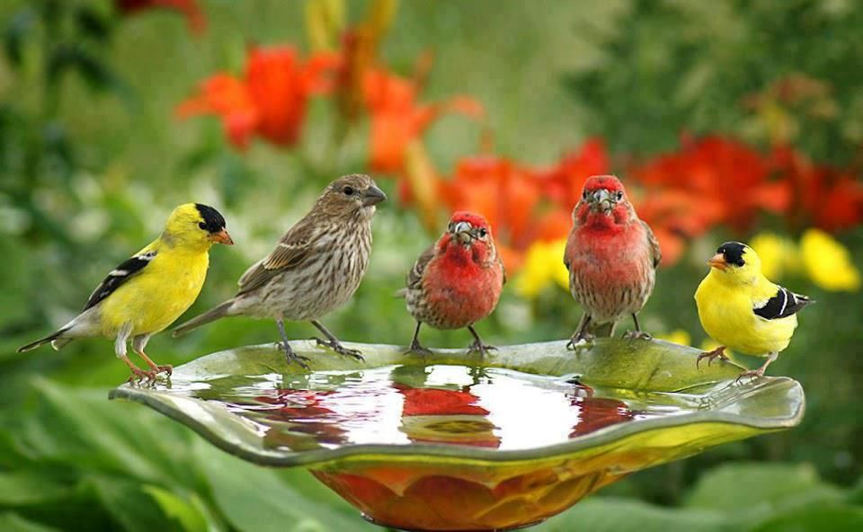

O verão é uma das quatro estações do ano, caracterizada por dias mais longos, temperaturas mais altas e um clima geralmente mais ensolarado. É uma época muito aguardada por muitas pessoas ao redor do mundo, pois traz consigo uma atmosfera de diversão, relaxamento e atividades ao ar livre. Durante o verão, o sol brilha intensamente, proporcionando calor e energia abundantes. As pessoas costumam aproveitar ao máximo os dias mais longos, passando tempo ao ar livre em praias, parques, jardins e piscinas. É uma oportunidade para se engajar em atividades recreativas, como nadar, praticar esportes aquáticos, fazer caminhadas, acampar e desfrutar de piqueniques.
O verão no Brasil geralmente começa por volta do dia 21 de dezembro, no solstício de verão, e termina em torno do dia 20 de março.

 
